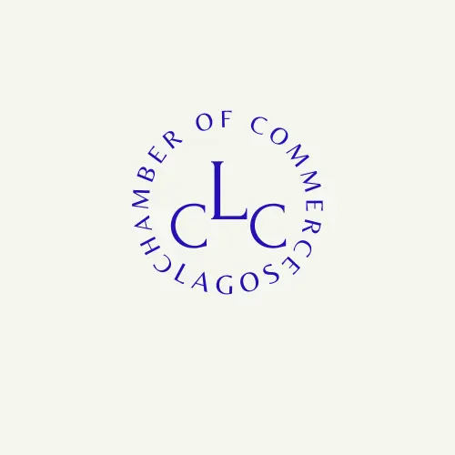

Site Name
Site Name: Lagos Chamber of Commerce
This name represents the state in which the chamber operates.
Domain Name: lcc.org
Logo: 
Site Purpose
The Lagos Chamber of Commerce (LCC) is dedicated to fostering economic growth, supporting businesses, and promoting trade within Lagos and beyond. Our purpose is to provide resources, networking opportunities, and advocacy to help businesses thrive. We facilitate both local and international trade by creating connections between businesses and investors. We represent the interests of businesses to policymakers, ensuring a favorable economic environment.
Scenarios
I own a small business in Lagos. How can the Chamber of Commerce help me grow my business and connect with potential clients?
I'm an international investor interested in doing business in Lagos. What resources or support does the Chamber provide for foreign investors?
I recently started a tech company. Does the Chamber offer funding opportunities, mentorship, or networking events to help startups succeed?
I'm struggling with some government regulations affecting my business. Can the Chamber of Commerce help advocate for policy changes or provide guidance?
Color Schema
Primary Colour: #003366; for header, footers, h1, h2, navigation, borders.
Secondary Colour: #00509e; for section, div.
Accent 1: #f4a261; for call-to-action buttons, highlights.
Accent 2: #e76f51; for hover effects, promotions, important announcements, warnings.
Background Colour: #f8f9fa; Overall background (body element).
Text Colour: #343a40; for main content text.
Typography
Montserrat: Headings, navigation, and CTA buttons.
Lora: Body text and paragraphs.